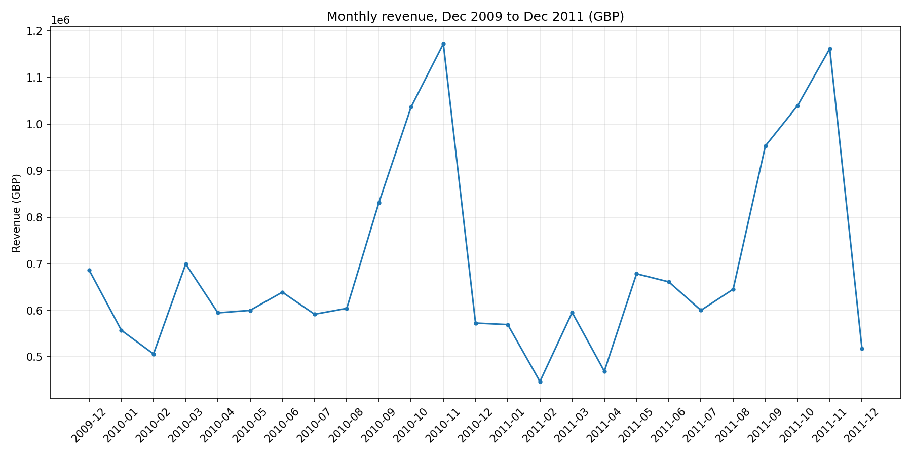
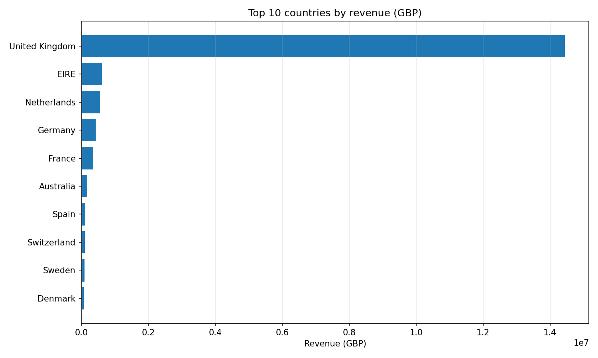
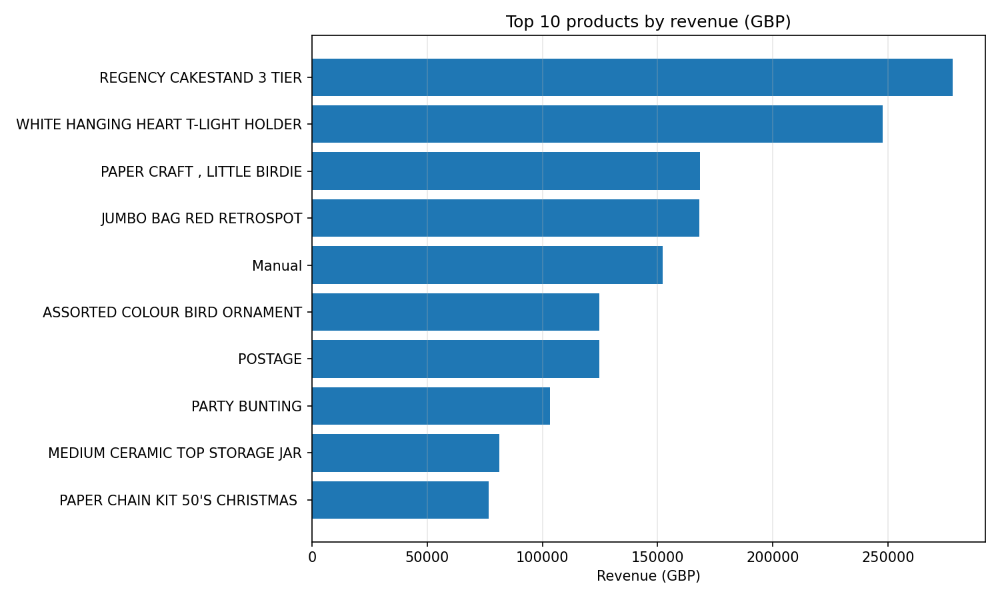
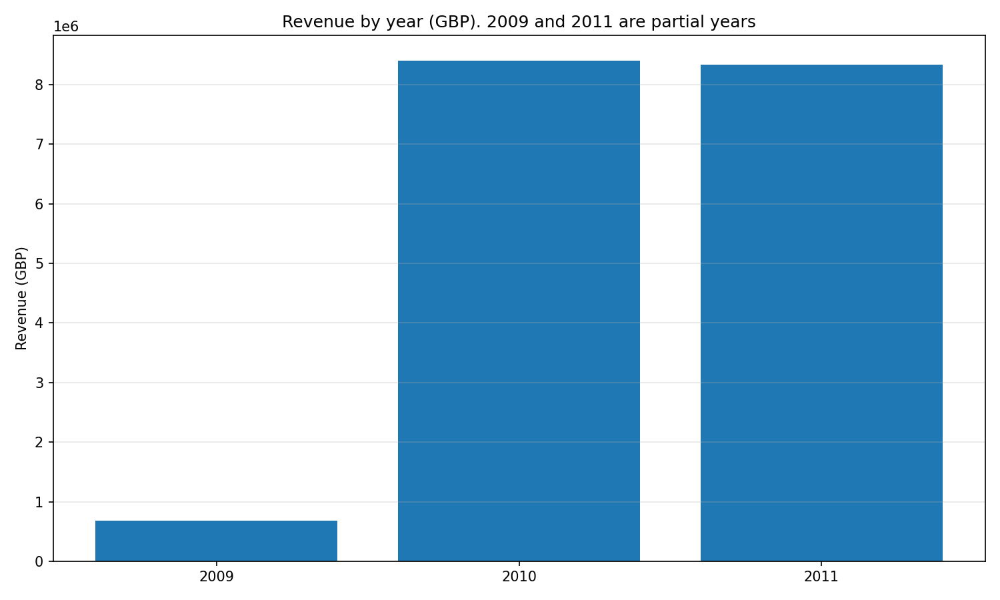
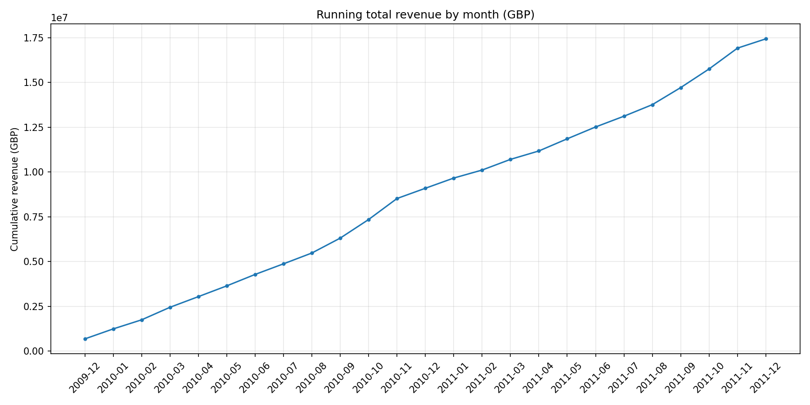
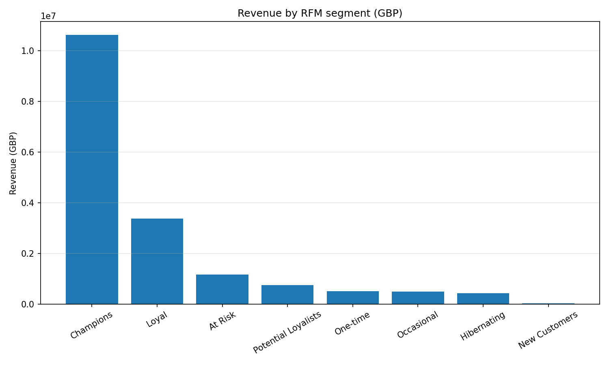
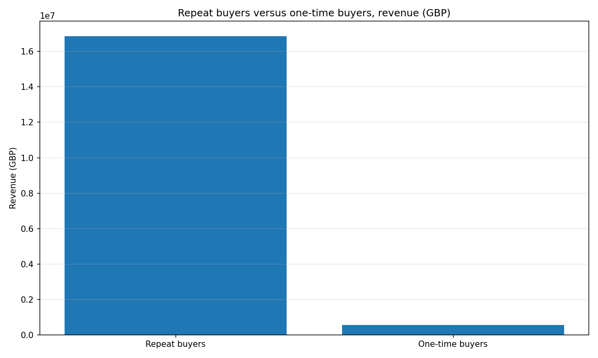
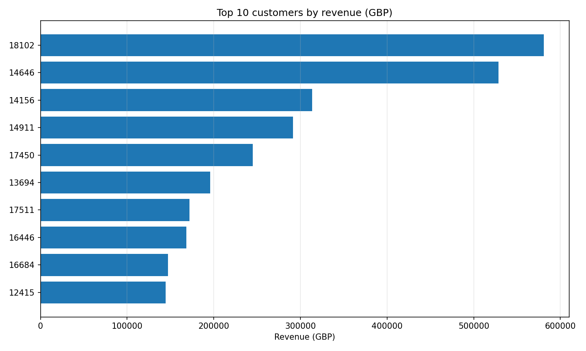

Learn SQL on a real shop: 791,045 cleaned order lines from a UK online gift retailer, Dec 2009 to Dec 2011, worth 17,431,551.18 GBP. No toy data. No server. Just SQLite, six query files, and questions a recruiter would actually ask.
A retail order line is one product on one invoice: how many units, at what price, bought by which customer, in which country, on which date. Revenue is Quantity times Price, in GBP. Most customers here are wholesalers who buy again and again, which is why repeat buyers drive almost all the revenue.
How to run this project. Install the requirements, then build the database, then run the query files in order:
pip install -r requirements.txt python3 scripts/load_database.py sqlite3 retail.db < sql/01_foundations.sql
Repeat the last command for files 02 through 06. The database file is gitignored on purpose: you rebuild it any time with the load script, which downloads the UCI file directly if the Excel file is missing. The source is UCI Machine Learning Repository, Online Retail II, dataset 502, DOI 10.24432/C5CG6D.
Read this first: the honest limits. This is the full UCI file, Dec 2009 to Dec 2011, not the Dec 2010 to Dec 2011 slice used in the earlier Python retail project. The two UCI sheets overlap Dec 1 to Dec 9, 2010, so the loader removes the second copy of 14,504 rows, worth 311,878.00 GBP, and counts it. Without that step, Dec 2010 would read 884,591.89 GBP instead of 572,713.89 GBP. No customer names exist in the file. StockCode M is Manual and StockCode POST is postage, not real products. RFM segments are descriptive buckets from stated thresholds, not a proven churn predictor. December 2009 and December 2011 are partial months.
The question in plain words: What is in this table, and how do I look at just the rows I care about?
What the SQL does: SELECT picks columns. WHERE filters rows. ORDER BY sorts them. LIMIT keeps only the first few. DISTINCT removes duplicates. LIKE searches inside text.
The answer: The transactions table holds 791,045 lines, 5,878 customers, 4,631 products, and 41 countries. The first lines are from 2009-12-01, invoice 489434. The newest lines are from 2011-12-09. The most expensive line by unit price is 10,953.50 GBP, a Manual line. The cheapest line costs 0.001 GBP. No lines have a missing Description in the cleaned data.
Follow along: 01_foundations.sql
The question in plain words: How much money did this shop make, who bought the most, and which months, countries, and products dominate?
What the SQL does: COUNT counts rows. SUM, AVG, MIN, and MAX summarize numbers. GROUP BY splits rows into groups, one result row per group. HAVING filters groups, the way WHERE filters single rows.
The answer: Total revenue is 17,431,551.18 GBP. The best month is 2010-11 with 1,172,336.04 GBP, then 2011-11 with 1,161,817.38 GBP. The United Kingdom leads with 14,444,491.73 GBP, 82.9 percent of revenue. The top product is REGENCY CAKESTAND 3 TIER with 278,150.20 GBP. The average basket is 471.52 GBP, the median basket is 303.60 GBP, so the average is pulled up by large wholesale orders. Eight countries clear 100,000 GBP.




Follow along: 02_aggregations.sql
The question in plain words: How do I combine this fact table with the dimension tables built from it, and how do I prove two tables agree?
What the SQL does: A JOIN matches rows from two tables on a shared value, here the customer ID, the StockCode, the country, or the month. INNER JOIN keeps only rows that match on both sides. LEFT JOIN keeps every row from the left table and fills NULL where the right table has no match, so "no match" stays visible. A self-join joins a table to itself with two aliases, to compare rows inside the same table.
The answer: The summary tables match the main table exactly: every customer revenue and every month revenue differs by 0 after rounding to 2 decimals. The LEFT JOIN shows which customers had no orders in the last 90 days of the file. The self-join shows repeated lines inside single invoices: those within-sheet repeats are kept in the cleaned data, 11,620 rows, because they cannot be told apart from genuine repeated lines.
Follow along: 03_joins.sql
The question in plain words: How do I rank things, track a running total, and compare each month with the month before, without collapsing rows?
What the SQL does: A window function computes across rows related to the current row, but keeps every row in the result. GROUP BY collapses groups. Window functions do not. RANK gives tied rows the same number. ROW_NUMBER never ties. LAG pulls the previous row's value, so you can compute change. A running total sums every row up to the current row.
The answer: REGENCY CAKESTAND 3 TIER is rank 1 by revenue. The running total reaches 17,431,551.18 GBP by Dec 2011. The careful month over month query builds every calendar month from 2009-12 to 2011-12 first, so no month is hidden: all 25 months have revenue. The "latest order per customer" query is a classic interview pattern: partition by customer, order by date descending, keep row 1. Read the top product per country with care: in Germany and France it is postage, and in EIRE it is Manual, not real products.

Follow along: 04_window_functions.sql
The question in plain words: How do I break a hard question into steps, and how do I sort customers into readable buckets?
What the SQL does: WITH gives a name to a step, called a common table expression, or CTE. Later steps use that name like a table. CASE WHEN tests rows one condition at a time and returns the first matching label, which is how you turn numbers into buckets such as "Champions" or "At Risk".
The answer: RFM means Recency, Frequency, Monetary, measured from 2011-12-10, the day after the last order. Champions are 771 customers, 13.1 percent of the base, but bring 60.9 percent of revenue. Loyal customers are 1,397, with 19.4 percent of revenue. At Risk customers are 344, with 6.7 percent. There are 1,628 customers whose last order was within 30 days, and 1,614 whose last order was over a year ago. The average customer spent 2,965.56 GBP in total, and 1,160 customers spent more than that average.


Follow along: 05_ctes_and_case.sql
The question in plain words: Can you answer recruiter questions with one clear query each, and explain every line out loud?
What the SQL does: Each query combines the earlier steps: counting, ranking, joining, CTEs, and CASE. Nothing new is introduced here. The capstone proves the ladder worked.
The answers:

Follow along: 06_capstone.sql
If a recruiter asks what you did here, say this: I took the full UCI Online Retail II file, 1,067,371 rows over two years, cleaned it in Python with a counted funnel, caught that the two sheets overlap for nine days in Dec 2010 and removed the second copy, loaded it into SQLite as a fact table plus customer, product, country, and invoice tables, and answered questions with SQL alone, from basic filters up to window functions, CTEs, and RFM segments. I checked my results against summary tables and stated the limits plainly: no customer names exist, Manual and postage are not real products, RFM segments are descriptive buckets, and Dec 2009 and Dec 2011 are partial months. The queries are in the sql/ folder, the outputs are in results/, and the charts are in charts/.
Published at github.com/jwavalosq/sql-retail, story site jwavalosq.github.io/sql-retail.